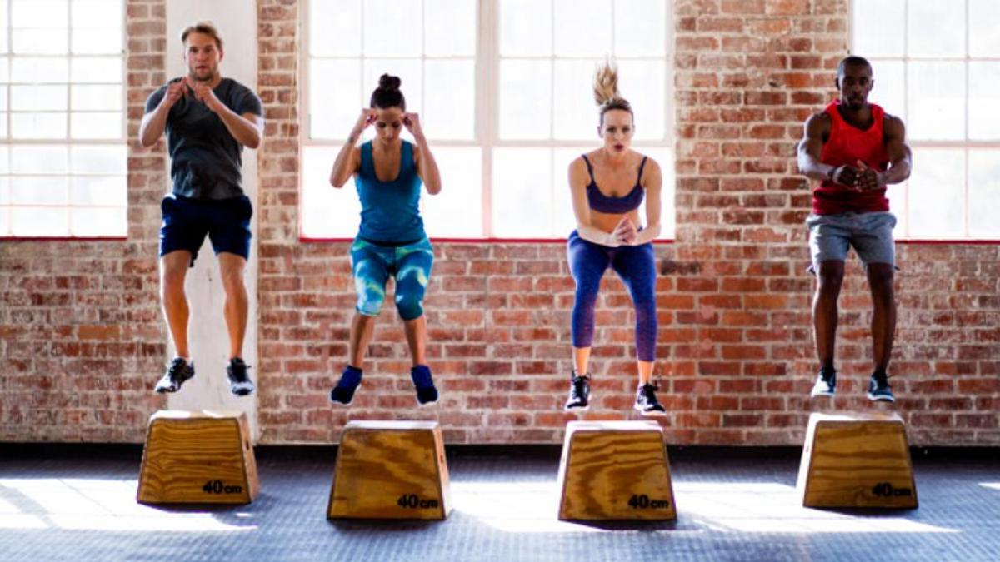

Curiosidades del Deporte
El ejercicio fisico mejora la funcion mental, la autonomia, la memoria, la rapidez, la “imagen corporal” y la sensacion de bienestar, se produce una estabilidad en la personalidad caracterizada por el optimismo, la euforia y la flexibilidad mental.
Beneficios del deporte en el cerebro
- Aumenta la sensacion de bienestar y disminuye el estres mental. Se produce liberacion de endorfinas, sustancias del propio organismo con estructura quimica similar a morfina, que favorecen el ” sentirse bien” despues del ejercicio.
- Disminuye el grado de agresividad, ira, ansiedad, angustia y depresion.
- Disminuye la sensacion de fatiga. Le da mas energia y capacidad de trabajo.

Entrenamiento solitario vs Entrenamiento grupal
Los deportes individuales fomentan la autoestima, la responsabilidad y la independencia mientras que los deportes en equipo potencian el compañerismo, el trabajo en equipo y el pensamiento estratégico.
-
Crece la autoestima
Ganar, por ejemplo, una carrera de velocidad o llegar el primero a la meta pedaleando a lomos de una bicicleta va a depender únicamente y exclusivamente de las habilidades y el esfuerzo de cada niño. Esto le ayudará a valorarse más y mejor. -
Fomenta la independencia
En un deporte individual el niño no cuenta con la ayuda de otros para lograr su objetivo. Esto fomenta su independencia a la hora de afrontar el reto deportivo. -
Aumenta la responsabilidad
En el caso de perder o no llegar al objetivo marcado la responsabilidad será de uno mismo y de nadie más. Esto le enseña al niño a asumir un mayor compromiso con su deporte y aceptar las consecuencias de sus decisiones.